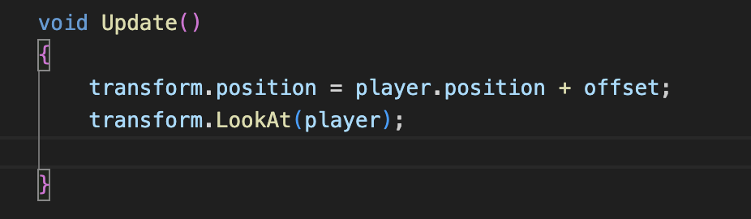
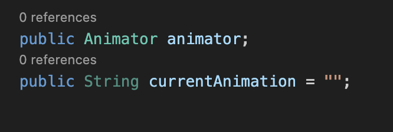
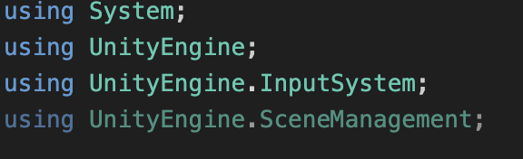

Introduction
Welcome to the Cleveland State University Fall 2025 Game Jam!!!
Here, you'll find instructions on how to setup a basic, topdown game in two engines: Unity and Godot
These will help build a foundation off of which you and your team will build your own, custom, awesome game!
What is Unity?

Unity is a modern, powerful game engine and editor that allows one to create fun and beautiful games using C#. Unity offers a built-in physics engine, a flexible and usable scene system, and licensing freedom as open source software. In addition, developers get access to the Unity Asset Store, which offers thousands of assets for use in your game!
Getting Started
Downloading Unity
- Go to unity.com/download
- Click "Dowload" at the top to download the installer for Unity Hub.
- Follow the installer's instructions to download the Unity Hub.
- Once finished, the Hub should launch automatically and prompt you to download the Unity Editor. Please do so.
- Caution: This is a LARGE installation. Ensure you have ample storage space before proceeding.
For Linux:
-
Navigate to this link.
- I recommend using the terminal commands that are provided on the page to install Unity Hub.
-
Similar to the Windows/Mac installation, once opened, the Hub will automatically prompt you to install the Editor (if you haven't already).
-
Should look something like this:

-
If there isn't one, navigate to Install section and click Install Editor:
-
Next, select the LTS (Long-Term Support) version.

- As the name suggests, this version will be more reliable in the long-run.
-
FOR ALL INSTALLS:
- When prompted to select which modules to add, select WebGL Support.
- Exporting the game's playable executable to the web is how all participating groups MUST present their games during the final evaluations.
Creating a new project
- Once Unity Hub is installed, navigate to the "Projects" sidebar
- Click "New Project"
- In the sidebar, click "All templates".
- We will be using the "Universal 3D" template
- On the side, give your project a name and place it in your desired directory.
- Click "Create project" and it will create and launch the editor automatically.
- This is what it looks like...

General Layout
Counterclockwise...
-
Scene Panel
- This panel contains what scene you're on currently as well as all the game objects that that scene holds (ex: camera, light source, ground object, your player asset, obstacles).
-
File View
- This is where you can see all the files currently within your project. For our purposes, we only need to focus on the Assets folder and its sub-folders. In addition, you can also create your own folders to keep your project organized and functional.
-
Component Panel
- This is where you can see all the different components/parts of your selected game object. These could be things like transformation values (position, scale, and rotation), colliders (to allow for collision), Rigidbody (for movement with physics) and many more...
-
Scene View
- This is where you can see your scene and how all of your assets physically look in your scene. There are two basic tabs here: the Scene tab and the Game tab. The Scene tab allows you to make whatever changes you want and the Game tab shows what your changes will look like during gameplay. In addition, you can press the play button at the top to start gameplay at any time you like to test any changes that you have made.
File Setup
Before we proceed, we need to make some additional changes:
- Download this tutorial's assets.
-
Once downloaded, place this zip file somewhere on your computer where you can access it easily.
-
Then, go to the Unity Hub. If its open, the icon for it below in the taskbar (for Windows) or Dock (for Mac) should looks something like this:
-
Once inside Unity Hub, find and click Projects (should be on the left in the list of menus).
-
Find your project (the one you just made) in the project list.
-
On the right, click the 3 little dots.
-
Click on the first option you see.
- For Mac, this will be Reveal in Finder. For Windows, this will be Show in Explorer. And, for Linux, this will be Show in File Explorer.
-
This will open your project directory on your computer (wherever it was created).
-
Double-click the Assets folder.
- This is where we'll place the unzipped updated_assets folder.
- This is where we'll place the unzipped updated_assets folder.
-
Now, find your zip file (wherever you stored it) and unzip it.
- Upon unzipping, you'll see two folders:
- updated_assets and _MACOSX.
- Ignore the _MACOSX folder.
- updated_assets and _MACOSX.
- Once unzipped, move this folder inside of your project's Assets folder (drag-and-drop)
- For this part, I would suggest having two separate windows of your file explorer open.
- Upon unzipping, you'll see two folders:
-
Now, upon opening the Unity Editor, the updated_assets folder should be visible in the File View section below.
- Double-click it to open it and you should find the game assets inside.
- Double-click it to open it and you should find the game assets inside.
-
- Next, download the following packages:
- ProBuilder
-
Up top, in the Unity Editor, find the Window tab.
-
Click to expand it.
-
Find and click Package Manager.
- Optional: You can drag the window and dock it next to the Scene and Game tabs in your Scene View.
-
In the window, on the left, click on Unity Registry.
- You may need to expand the tabs on the left to find it:

-
In the search bar, start typing ProBuilder and you should see it in the search results below.
-
On the right, in the package description, find the Install button and click it to install ProBuilder.
-
- Unity glTFast
- Follow the same steps as above to navigate to the Package Manager.
- But, this time, in the top-left corner of the Package Manager window, look for a plus icon with a dropdown menu triangle next to it
- Should look something like this:

- Should look something like this:
- Expand the dropdown menu and find the Install package by name... option
- In the textbox, paste this name: com.unity.cloud.gltfast
- Click Install and it will install the package and show you a package description (similar to ProBuilder)
- ProBuilder
Why do we need these packages?
- ProBuilder will allow us to create custom shapes and obstacles to place in our scene. Once we learn how to use it, we can let our imaginations run wild!
- Unity glTFast will allow us to actually use .gltf files (and the asset files in the folder you downloaded up above).
Let's begin building our scene!
Adding a ground object
Let's start by adding a ground object:

- Right-click in the Scene Panel on the left.

- Hover over 3D Object.
- Click on Plane to create a plane.

- Double click on the newly created plane object in the scene panel (on the left) to zoom in on it in the Scene View (in the center).
- On the right, in the component panel, inside the Transform section, change the Scale's x-component and z-component to 5 and 12, respectively. In addition, set all components of Position and Rotation (inside Transform) to 0.
- Also, ensure that your axes are aligned the same way that they are in the image above.
- The z-axis (in blue) should be pointing away, diagonally.
- The z-axis (in blue) should be pointing away, diagonally.

- From within the updated_assets folder, click and drag jearl_backwards onto the ground object (which is the plane we created earlier).

-
Repeat step 4 but, this time, drag and drop the motor_oil asset onto the ground
- Be sure to place it somewhat far away near the opposite end of the plane (away from jearl_backwards)
- Be sure to place it somewhat far away near the opposite end of the plane (away from jearl_backwards)
-
Quick tip:
- In the Scene View, up top, right-click on the Scene tab.
- Click on Overlay Menu
- In the list, click on Cameras
- This will toggle a preview window for the camera in this game
- We'll only ever have one camera in this tutorial. Therefore, this is handy for seeing the POV of your camera (i.e. what its looking at)
- Right-click on Main Camera and click on Align with View to align the camera with your current view (for initial testing).
This concludes our scene setup (for now). We will now proceed to the input configuration
Input Configuration
-
For this tutorial, we will be using the new Unity Input system.
-
Those w/ prior Unity experience may still know how inputs were taken from the user before the addition of the new system (done mostly within code)
-
However, with the new system, we can easily configure different actions for our player asset with custom made action maps and key bindings (you can even configure controllers!)
Quick disclaimer:
- Unity, as part of the new input system, provides an auto-generated input actions asset called InputSystem_Actions.inputactions.
- This comes with a lot of presets already assigned for character movement and UI navigation.
- If you prefer to use it, then skip to step 10. Otherwise, continue onward.
Let's get started!
- Navigate out of the updated_assets folder (if you're following along from the previous page) into the Assets folder.

- In the Assets folder in the File View below, right-click, hover over Create and find the Input Actions option. Click it to create a new Input Actions Asset.
- Unity will prompt you to enter a new name for it.
- I named mine "Player_Control" but you can name it whatever you want. Henceforth, I will refer to it using this name
- On the right, in the Component Panel, click Assign as the Project-wide Input Actions. This ensures that our inputs stay consistent and that we don't run into any unexpected errors.
Now, double-click Player_Control to open it in a separate window and dock it next to the Scene and Game view.

- On the left, in the Action Maps panel, create a new action map called Player by clicking the plus icon in the top right corner of the panel.
-
Name it Player
-
An action map is essentially a container that holds bindings (either for a keyboard or for a controller). Once established, this action map (and its associated bindings) can be assigned to whatever asset we want (like jearl_backwards).
-

- On the rightmost panel (called Action Properties), change the action type to Value.
- The reason is because, conventionally, movement in games is always done by pressing and holding a button (i.e. it generates a continuous value like "WWWWWWWWW..." for forward movement) unlike jumping, for example, where we press once and don't hold.
- The game engine (and our script) will read that continuous string of W's, interpret it to mean forward movement and, consequently, move our player forward so long as it keeps getting those continuous W's.
- It's not exactly like this but hopefully you get the idea üòÅ
- It's not exactly like this but hopefully you get the idea üòÅ
-
In the additional dropdown menu that is spawned underneath Action Type (called Control Type), change its value to Vector 2.
- This is because our movement is only in 2 directions (the x-axis and the z-axis). This is unlike Creative Mode in Minecraft, for example, where we can freely move in any direction.
- We will move in the y-axis (via jumping) but not with continuous movement.
- We will move in the y-axis (via jumping) but not with continuous movement.
- This is because our movement is only in 2 directions (the x-axis and the z-axis). This is unlike Creative Mode in Minecraft, for example, where we can freely move in any direction.

- In the center panel (called Actions), where it says New Action, rename it to Movement.
- Then, click the small plus icon next to Movement (all the way on the right)
- In the menu that pops up, click Add Up\Down\Left\Right Composite.
- If an additional item called No Binding is created, delete it.
- This will automatically create placeholders for 4 movement bindings (for, say, W-A-S-D) and bind/aggregate them into a single 2D vector.
- I haven't tried this yet but you could try manually creating each key binding (without creating the composite). However, you will have to aggregate them yourself in a C# script.
- Using the composite, therefore, will result in less headaches and a cleaner setup.

- Expand the dropdown menu of the newly created 2D Vector to show the 4 empty bindings.
- Now, for each binding:
- Click on it in the center panel
- On the right, open the Path dropdown.
- Here, either search for the key to attach to this binding or click the Listen button and press the key you'd wish to attach and it will pop up in the dropdown below.
- Click your desired key to attach it to the Up binding.
- Repeat for all 4 bindings.
- Now, for each binding:

- Up top, in the right corner, click Save Asset to save changes.

- Click on the Scene tab to navigate back to the Scene View.
- Click on jearl_backwards in the Scene View itself (or in the Scene Pane on the left)
- In its component panel (on the right), we will add a Player Input component to attach our newly made action map and key bindings to our player asset.
- In the component panel, clikc Add Component (usually at the bottom)
- In the search bar, start typing Player Input and you'll see it below.
- Click it to add it to the jearl_backwards asset.
- Notice that Unity will automatically assign our custom-made Input Actions asset here to the Actions attribute.
- If it didn't, drag and drop the newly created Action Map into the Actions attribute.
- In the Player Input component, The Default Map attribute (below the Actions attribute) will be Player *(referring to the binding map we made earlier).
Now, it's time to put all this together in a C# script.
But, first, we need to set up our code editors.
- For Mac, we are gonna have to use Visual Studio Code.
- For Windows, you guys are free to choose between VS Code and Visual Studio (the purple one).
For this tutorial, as a Mac user, I will use VS Code. But, feel free to use whatever is the most convenient.

- Click on jearl_backwards
- In its component panel, at the bottom, click Add Component
- In the search bar, start typing New Script
- You should see the option shown in the image above.

- Name the script something like Player_Movement. Then, click Create and Add. This will create the script and add it as a component to this object (jearl_backwards)
Now, when you double-click the script (inside the script component or in the Assets folder), assuming you set up your respective IDE correctly, it should automatically open the script in said IDE. For me, in VSCode, it looks something like this:


- In the Update function, type MovePlayer() (we'll define this function later).
- This function, as per the description of the Update() function, will run once per frame of gameplay.
- Add three variables before Start() but inside our main method:
- public float speed
- This will dictate the speed of our player object's movement
- Since this variable is public, we will be able to change the value of this variable on the fly once we're back in the Editor.
- public Vector2 move
- If you remember from earlier, our movement (inside our action map) is strictly in 2 directions (that's what we want). We limited our key bindings to Vector2.
- Thus, when we read our player's movements, they will be in a 2D vector and will be placed inside an object of type Vector2
- public Vector3 movement
- Since our game world is a 3D space, we need to translate our 2-dimensional movement into a 3D vector w/ the y-axis (straight up) set to 0. Which is why we need this variable.
- Bonus question: why would we set the y-axis to 0 in our 3D vector?
- Since our game world is a 3D space, we need to translate our 2-dimensional movement into a 3D vector w/ the y-axis (straight up) set to 0. Which is why we need this variable.
- public float speed

-
Add the following function after Update():
-
public void OnMove(InputAction.CallbackContext context) { move = context.ReadValue< Vector 2 >(); }
-
You may also need to import the following library up top with this line:
- using UnityEngine.InputSystem
- using UnityEngine.InputSystem
-
Imagine your player asset is a toy remote car:
- Your keyboard/controller is the remote.
- Unity's Input System is the "messenger".
- The function OnMove is the car receiving the message.
- The CallbackContext is the message itself (the message that you send to the function upon a button press).
- The message says what you (the person controlling the car) want the car to do.
- Move? Move where? How fast? Is this gonna happen once or continuously?
- The message says what you (the person controlling the car) want the car to do.
- In this case, the message is a 2D vector indicating which direction we want to move in.
-

-
Define MovePlayer() using the image above.
- We placed the movement = new Vector3(move.x, 0f, move.y) line
- What does it mean?:
- Consider the following example:
- In a 2D space like the one below:

- (0,1) would mean "move in the positive y axis" (i.e. upward)
- But now, when we translate this 2 dimensional movement into a 3 dimensional world, we have to be careful.
- The y-axis is now upwards (directly upwards). The newly added z-axis is the new "forward" axis. And the x-axis is still for left and right movement.
- So, when we map (0,1) from 2D to 3D, we would have to assign it like this (assume our 2D vector is called "move", like above, and our 3D vector is still "movement"):
- movement = new Vector3(move.x, 0f, move.y);
- Why?
- As stated earlier, we don't move upwards with WASD. We only move along the x and z axes.
- Since our 2D vector is (0,1), our 3D translation of this 2D vector would be (0, 0f, 1). Which means that we are now moving (in the 3D space) 1 unit in the positive z-axis (AKA forward)
- Since this action is repeated every frame, in 60 fps gameplay, this will result in our character having smooth forward movement.
- In a 2D space like the one below:
- Consider the following example:
- What does it mean?:
- We also placed a new line: transform.Translate(movement * speed * Time.deltaTime, Space.World);
- What does this line mean?
- transform
- Refers directly to this game object's Transform attribute.
- .Translate
- Allows us to move the object from its current position.
- movement * speed * time.DeltaTime.
- We multiply our speed value by our movement vector (so that we're not at a speed of 1 unit per frame).
- This vector is then continuously added to the game object's position vector to move it.
- time.deltaTime
- What is that?
- This allows our player movement to be frame-independent.
- Imagine that your computer runs the game at 60 fps (frames per second).
- We can calculate the total # of units moved by the player by doing the following calculation:
- 60 * 5 (our speed, let's say) * movement ([0, 0, 1], let's say)
- Thus, we moved 300 units in total
- Let's assume your friend's PC runs the game at 120 fps.
- Then, by the same calculation (with the same movement), we'd move 600 units in total when the game runs on their PC.
- That's not good! This means that the higher the FPS is, the faster we move.
- Then, by the same calculation (with the same movement), we'd move 600 units in total when the game runs on their PC.
- This is why we multiply this entire expression by time.deltaTime (whose value is roughly equal to 1/your fps amount).
- 60 * 1/60 = 1
- 120 * 1/120 = 1.
- Therefore, our movement stays consistent across different machines (since we're just multiplying by 1).
- Space.World
- This allows our player object to move relative to the game world's global axes.
- This means that, regardless of where the game object is or what direction it's facing or what orientation the camera is in, when we press "W", we will always move in the direction of the game world's positive z-axis.
- transform
- We placed the movement = new Vector3(move.x, 0f, move.y) line
Now, let's go back to the Unity Editor.
-
Click on the jearl_backwards (either in the Scene Panel on the left or in the Scene itself) asset to view its components.
-
In the Player Input component, find the Behavior attribute.
-
Change its value from Send Messages to Invoke Unity Events.
-
Right underneath, click and open the Events dropdown.

-
Click and expand the Player dropdown
-
If the previous steps were followed correctly, you should see a box labeled Movement (CallbackContext)
-
Click the Plus icon at the bottom right of the box.
-
In the blank attribute, drag and drop the jearl_backwards asset into it.
-
Open the No Function dropdown
-
Again, if the previous steps were followed and you saved your script, you should see an option called Player_Movement (which is the name of one of the functions we created in our movement script)
- Click and expand it
-
In the following menu, at the top, you should see OnMove (which is our Input function for movement)
- Click it.
-
What all this did is assign the OnMove CallbackContext function to our player object. Now, whenever we press WASD (buttons associated with movement), those key inputs will be read and sent to this function.
Fatal error (this is me from a couple minutes in the future). I just realized that I placed down the assets in the wrong way. If you've been following this tutorial, when you ran the game, your player is likely moving in the complete opposite directions.
Fix: Swap the positions of your motor_oil and jearl_backwards assets and also turn the camera so it is properly oriented and centered on our player (the blue axis should be facing away from the camera). Like this:
Run the game and you should be able to move! But, you'll notice that the player is "stiff". He's always looking in the same direction. Let's change that so that the player looks in the direction that we're moving in!

- Back in our script, add the following line inside the MovePlayer:
- transform.rotation = Quaternion.Slerp(transform.rotation, Quaternion.LookRotation(movement), 0.1f);
- What does this mean?:
- transform.rotation
- Now, we're accessing this game object's rotation characteristic (before, it was translation)
- Quaternion.Slerp(...)
- In mathematics, Quaternions are objects that are used to represent rotations in a 3D space
- The function .Slerp() takes two such quaternions and interpolates (or transitions) between them with a given strength (indicated by a floating-point number).
- (transform.rotation, Quaternion.LookRotation(movement), 0.15f)
- Here, our two quaternions are:
- transform.rotation
- This object's current rotation
- Quaternion.LookRotation(movement)
- The rotation that's required to face in the direction of the given 3D vector (we used the Quaternion class's built-in function, LookRotation, to achieve this)
- 0.1f
- We transition between these two rotations with a strength of 0.1 (which is slow enough to see the transition)
- Our game object will smoothly transition between rotations (instead of snapping) when we press WASD.
- We transition between these two rotations with a strength of 0.1 (which is slow enough to see the transition)
- transform.rotation
- Here, our two quaternions are:
- transform.rotation
Now, when you go back to the Editor, let the new script update, and hit Play, you should see movement and the player object rotate (i.e. look) in the direction of the movement. Isn't that cool?
Now, let's add some jumping functionality

- Open the Player_Control action map. Then, right click on the "Player" action map and hit Add Action.

- Click once on the newly created action, press
Enter, and rename it to Jump.- Also, in the right-hand panel, ensure that the Action Type attribute for this action is button (we will press the jump button once to jump. not hold it)
- Also, in the right-hand panel, ensure that the Action Type attribute for this action is button (we will press the jump button once to jump. not hold it)

- In the middle panel, next to Jump, click the triangle to view its contents.
- Click on < No Binding >.
- Over to the right, open the Path dropdown and either search for the Spacebar key or use the Listen feature (like earlier).
- Select Spacebar from the search results to assign it to the empty key binding.
- Make sure to click Save Asset in the top right.

- Back in our Scene View, click on jearl_backwards to access its components
- Click on Add Component and, in the search bar, start typing Rigidbody. You should see it in the search results.
- Click on Rigidbody to add it to our player object
- What's the point?
- This component enables our player object to now be affected by physics (i.e. gravity)
- Without this, our jump functionality would not work and be very wonky

- Inside of the Rigidbody component, under the Constraints dropdown, check the boxes for the X and Z axes for Freeze Rotation
- Why?
- This will prevent unwanted rotations or leaning when our player interacts with or collides with any uneven surfaces.
- Locking these two axes ensures that our jump force is only applied to the y-axis (directly up) and nowhere else.
- Why?
Let's make a few changes to our script

- Add the following three variables up top:
- Rigidbody rb;
- public bool isGrounded;
- public float jumpStrength = 7f;
- Let's take a look at these:
- Rigidbody rb;
- This will hold the Rigidbody component of this object (the object that this script is attached to). Which will allow us to add forces to it later
- public bool isGrounded;
- This ensures that we can only jump again once we have landed (and not at any other time)
- Simply relying on collisions can cause some errors.
- Without this check, we could either fall through the ground or keep jumping up forever and never land.
- public float jumpStrength = 7f;
- Self-explanatory. Allows us to tweak the strength of our jump (we can also give custom values in the editor itself)
- Rigidbody rb;

- Underneath our OnMove function, add this function.
- The syntax is mostly the same except for one key difference...
- context.performed
- Remember, we are not pressing and holding the jump button. This is a one-and-done type of action
- Therefore, we do not need to constantly read a value from the action map (like OnMove)
- We just need to check, once, whether or not we received a context (message) from our key binding (the jump button)
- If we did, we print a message to the console
- If we did, we print a message to the console
- We just need to check, once, whether or not we received a context (message) from our key binding (the jump button)
- context.performed
- The syntax is mostly the same except for one key difference...
- Add the if statement that you see up above inside our earlier if statement.
- What does this even mean?:
-
We nested this addition inside of our context.performed if statement.
- This ensures that if we press the jump button while the player object is airborne, we won't add more force to the player (i.e. double jump)
- Not necessarily a bad thing. Feel free to implement this later if you want to.
- This ensures that if we press the jump button while the player object is airborne, we won't add more force to the player (i.e. double jump)
-
if (isGrounded) {...}
- If isGrounded is true (i.e. we are on the ground)
-
rb.AddForce(Vector3.up * jumpStrength, ForceMode.Impulse)
- We will add an impulse force (instantaneous force) to our Rigidbody component, which will, in turn, affect the player object.
- This force will be equal to the 3D up vector (whose value is (0, 1, 0)) multiplied by our jump strength.
-
- What does this even mean?:

- In our Start function, add the above line
- This allows us to actually access and store this object's Rigidbody component inside of our variable to use in our script.
- We placed this inside Start() so that this action is only performed once. We access the Rigidbody component once, store it, and that's it.
- EDIT (This is me from the future) --> Change this line from rb.GetComponent... to rb = GetComponent...
But, how can we actually check if the object has even landed to then enable it to jump again?
The answer? With collisions

-
Add the following function below our OnJump function.
- Do note that this is a built-in function that we are simply overwriting.
- Intellisense and autocomplete should kick in as soon as you start typing the function name.
- Upon any collision, Unity, by default, calls this method. The physics engine is fast enough to even call this multiple times per frame.

- Add the following if statement to the function body.
- What does this mean?
- Debug.Log(...)
- This is here to ensure that a). a collision occurred and b). it occurred with the correct object.
- if (collision.gameObject.CompareTag("Ground")) {
- When a collision occurs, the collision variable in our method signature will be given information about the collision.
- The "collision." refers to the collision that just occurred.
- The ".gameObject" refers to the other object that this object collided with
- The .CompareTag checks if that other object held a tag of "Ground" (we'll go over what this is in just a little bit).
- So, if the other object in the collision that just happened with our object is tagged with the tag "Ground", then...
- We set isGrounded to true (i.e. we have landed).
- When a collision occurs, the collision variable in our method signature will be given information about the collision.
- Debug.Log(...)
- What does this mean?

-
Let's add a tag to our Plane game object.
- Back in the Editor, click the Plane object to view its components.
- In the Component Panel (on the right), up top (underneath the object's name), find the Tag attribute.
- Click the dropdown menu next to it to expand it.
- Click Add Tag...
- In the new window, click the plus icon.
- Name your tag Ground (name it EXACTLY the name we used in our if statement in the collision function in our script).
- Click Save.
- Click on the Plane ground object to see its components. Again.
- Find the Tag attribute and the dropdown.
- Open the dropdown and you should see your newly created tag in the list.
- Click it to assign it to this object.
- Unity does NOT do this automatically. So, don't forget this step!
- Unity does NOT do this automatically. So, don't forget this step!
-
You remember earlier when we configured the OnMove function in our Player Input script? This time, we need to do the exact same thing, but for the OnJump function!
- Click on jearl_backwards to view its components.
- In the Player Input script, open the Events dropdown (same as before).
- Open the Player dropdown.
- If you see a new box labeled Jump (CallbackContext), repeat the same steps as before:
- Click the plus icon
- Drag our player object into the empty box below Runtime
- In the bigger dropdown, find our movement function.
- Open it.
- You should see an option for OnJump
- Click that and you're good.
-
Make sure to add a Box Collider component to your game object. The process is that same as any other component. Simply add it and that's it.
So now, assuming everything was set up correctly, upon running our game, you should be able to move AND jump!
Now, for a final touch (before moving on to animations), let's fix the position of our camera

- Let's make a new script for our Main Camera object
- Click on the Main Camera to open its Component view on the right side.
- At the bottom, click Add Component and type in the box New Script
- Let's name the script Player_Follow
- Once created, double-click to open it.

- Let's add the following variables first:
- What do they mean?:
- public Transform player;
- We will need this later to hold information about our player object (we'll just click and drag our player object into this variable in our Editor later).
- public Vector3 offset = new Vector3(...)
- This is the three dimensional position that the camera will be locked at.
- Note: These are coordinates that I decided to use after a bit of trial and error (I just like how the camera sits at this position).
- You can experiment yourself to find the location that you find better.
- Move the camera to that position. Then, just copy its Position values (from Transform) into this Vector3 variable.
- public Transform player;
- What do they mean?:

- Now, we'll add the lines up above into the Update() method
- What does this mean?
- transform.position = player.position + offset;
- We're gonna take the position of this game object (the object that this script is attached to) and add to its position (which is in three dimensions) the position of the offset that we set up above.
- transform.LookAt(player);
- This line will apply a rotation to this game object (the camera) that will ensure that its forward vector (the z-axis vector) is pointing directly at the specified game object (which we'll set to our player object in the Unity Editor).
- transform.position = player.position + offset;
- What does this mean?
Now, when you return to the Unity Editor and look at the Main Camera's components, make sure to drag jearl_backwards into the empty slot next to the Player variable. Run the game and see if the camera is attached to the player object.
We are now finished with the input configuration. Next, we will add animations to the player object
Let's get Visual Studio Code set up!
-
Download Visual Studio Code.
-
In VSCode, navigate to the extensions page on the sidebar and download the following extensions:
- C# Dev Kit (by Microsoft)
- You may also need to download the .NET SDK as well. Installing this extension without the SDK causes some annoying pop-ups.
- Follow the appropriate tutorial provided by Microsoft using this link to do so.
- Unity (by Microsoft)
- C# Dev Kit (by Microsoft)
-
Next, open your Unity Project and do the following:
- For Mac
- Go to Unity and then click Settings
- In the left sidebar, find and click External Tools
- In the External Script Editor sidebar, find Visual Studio Code.
- If not there, click Browse...
- Go to Applications and find Visual Studio Code then click Choose
- Close out of Settings
- For Windows
- Go to Edit (up top), click it, and then find and click Preferences
- On the left sidebar, find and click External Tools.
- In the External Script Editor, find Visual Studio Code.
- If not there, click Browse...
- In File Explorer, on the top right, search for the Visual Studio code .exe file (the actual application itself)
- Double click it.
- For Mac
-
Upon returning to the Unity Editor, inside the dropdown bar, you should see something like this:

Let's get Visual Studio set up!
-
Download Visual Studio 2022 Community Version
-
Click on Download Visual Studio
-
Save the VisualStudioSetup.exe file to Downloads
-
In Downloads, double-click the .exe file to open it.
-
In the User Account Control pop-up, click Yes.
-
In the Installer window that pops up, click Continue
- This will download the Visual Studio Installer, from which you can install Visual Studio 2022 Community Edition
-
In the window that pops upon a finished installation, where you are asked to select workloads for Visual Studio, choose:
- Game Development with Unity
-
In the bottom right of the window, click the Install button (should have a purple outline around it)
- Now, Visual Studio will install.
- This might take a while. So, relax and take a breather!
-
Once installed, it'll launch automatically.
-
The next window will ask you to sign into either a Windows account or a Github account.
- Log into whichever you want. Or don't log in. It's up to you.
-
In the next window, keep Development Settings to General and pick whatever theme you want.
-
Click Start Visual Studio
-
If a window pops up asking you to open a folder or create a folder, click the Continue without Code option (in small print, at the bottom)
-
Next, open your Unity Project and do the following:
- Go to Edit (up top), click it, and then find and click Preferences
- On the left sidebar, find and click External Tools.
- In the External Script Editor, find Visual Studio Code.
- If not there, click Browse...
- In File Explorer, on the top right, search for Visual Studio 2022 (the app itself)
Let's set up some animations!
To start, let's set up an animator for our object!

- In our Assets view, right-click then hover over Create. In the next menu, hover over the Animation menu. Then, in the next menu, click on Animator Controller.
- Be sure to name it something like "Player_Animate"
- What is this and why do we need it?
- The Animator Controller is an asset in Unity that handles the logic of which animations will play for a particular object, what the transitions are, when the transitions occur, and so on.
- However, for this tutorial, we will NOT be using it in the traditional sense.
- Instead, we will transition between the animations using code.
- In my recent experience in learning Unity, this was much easier to understand (for me, at least).
- In addition, the Animator Controller gets significantly more complicated as more animations are added and configured.
- Instead, we will transition between the animations using code.
- Double click on the newly created Animator Controller below in your Assets. You will see the window (in the image above) open up.
- When gameplay is initiated, the first node, the first animation that we place (which will act as a node on a graph) will connect to the Start node.
- This animation will play first upon initiating gameplay.
- From here on out, even though we won't make explicit node connections, we will still place all of our animations here (starting with idle animation first).
- When gameplay is initiated, the first node, the first animation that we place (which will act as a node on a graph) will connect to the Start node.

- To access our animations, double-click on the updated_assets folder.

- Find the jearl_backwards asset and click the triangle icon to expand the "innards" of the asset
- This is what you should see when you expand the asset. Here, our animations are items that are marked with a teal triangle with lines on the left. These are our animations.
- Be sure to thank David Awkar for creating and providing the assets and the animations (üéâ).
- Be sure to thank David Awkar for creating and providing the assets and the animations (üéâ).

- Drag and drop the idle animation into the Animator Board.
- This is our first animation that will play.
- By convention, in any game, the idle animation is always placed first.
- By convention, in any game, the idle animation is always placed first.
- This is our first animation that will play.
- From here on out, place all the rest of the animations onto the board.
- For our case, the order doesn't matter (except for the idle animation going first)
- This is because we'll be using code to switch in between the animations. Therefore, placement order doesn't matter.
- Back in the Scene view, click on jearl_backwards and, in the Animator component, drag and drop our Animator Controller object into the Controller box
- Unity will have auto-created an Animator Controller when you placed the jearl_backwards asset into the Scene.
- Unity will have auto-created an Animator Controller when you placed the jearl_backwards asset into the Scene.
Now, let's add the code to switch between animations!

- In our Player_Movement script, let's add the following variables:
- public Animator animator;
- This is what will hold our Animator Controller that we made earlier. Any changes we make to our animations will be made to this variable.
- public String currentAnimation = "";
- When transitioning between our animations, we will simply use the name of the animation (as it is inside our Animator Controller).
- This variable will simply hold that name as a String.
- public Animator animator;
- Now, let's add the following function to our script, right below OnCollisionEnter
- What is this? What does it do?
- This function is what will actually initiate the transition between our animations.
- It takes in two parameters:
- animation
- This is the name of the animation to transition to.
- crossfade
- This is the length (in seconds) over which we will transition between two animations.
- animation
- Let's go over each line:
- if (currentAnimation != animation) {
- If the current animation is NOT the new animation which we wish to transition to.
- This if statement ensures that we skip the body of the function if animation ever equals currentAnimation.
- currentAnimation = animation
- If the transition is a valid transition, then we take the name of the current animation and set it to the name of the new animation.
- Essentially, that String variable keeps track of the animation that is currently playing.
- If the transition is a valid transition, then we take the name of the current animation and set it to the name of the new animation.
- animator.CrossFade(animation, crossfade)
- This is the line performing the transitions.
- Since our animator variable is of type Animator, we can call the built-in function CrossFade on that variable (which, remember, is going to hold our Animator Controller) to switch from one animation to another.
- The first parameter is the name of the animation to transition to.
- The second parameter is the fade length in seconds.
- if (currentAnimation != animation) {
- We will now call this function in a variety of situations.
- What is this? What does it do?
- Next, below our ChangeAnimation function, let's add this function.
- What does it do?
- This function will run every frame (alongside movePlayer) to constantly change the player object's animation during gameplay.
- Let's go through each line:
- if (currentAnimation == "jumping") { return; }
- If our current animation is the jumping animation, DON'T DO ANYTHING.
- We don't want to make animation transitions while we're airborne. Hence, we use this line to ensure that that doesn't happen.
- if (movement.x != 0 || movement.z != 0) { ChangeAnimation("walk_cycle"); }
- If we're moving, at all, in any direction, then change the animation to walk_cycle.
- Recall that our movement variable is a 3D vector whose only changing values are for the x-axis and z-axis (we don't move upwards, along the y-axis, with WASD).
- So, we check these two. See if one is non-zero, the other is non-zero, or both are non-zero. If any one of these conditions is true, we change the animation to the walking animation.
- else { ChangeAnimation("idle"); }
- If we aren't moving at all, change the animation to idle. Pretty-self explanatory.
- If we aren't moving at all, change the animation to idle. Pretty-self explanatory.
- if (currentAnimation == "jumping") { return; }
- What does it do?
- Copy the if-else statement from our CheckAnimation function (which checks for movement) and paste it in the OnCollisionEnter function, inside the if statement that checks for a collision with ground
- Why do we need this here?
- Without this check here, after jumping (and initiating the jump animation), we will be permanently stuck in the jump animation.
- Without this check here, after jumping (and initiating the jump animation), we will be permanently stuck in the jump animation.
- Why do we need this here?

- Lastly, add a function call for the CheckAnimation() function in the Update() function.
- We need this function to run every frame so that our animation changes dynamically and constantly.
- We need this function to run every frame so that our animation changes dynamically and constantly.
- Back in our editor, drag and drop the Animator Controller object we created into the blank space in the Animator component of jearl_backwards in our Script component.
One last note --> add a ChangeAnimation() call for the "jumping" animation inside of our isGrounded (if (isGrounded) {...}) check in "OnJump"
Now, with the changes made, upon running our game, you should see animations for movement, idling, jumping and falling
Now, we'll discuss a particular tool that we downloaded a while back:
Probuilder

- For the Mac folks (works the same for Windowns as well), hover over Tools up top, then hover over ProBuilder to open/view the menu.
- If you recall, earlier in the tutorial, we downloaded two packages: Unity glTFast and Probuilder.
- ProBuilder allows us to create shapes of different sizes and patterns.
- You might say, "Ok. So what?"
- Well, these shapes, no matter what size you make them in, will have their own colliders and renderers (with a slight caveat that we'll discuss later)
- Let's create a spike pit!
- To start, let's create a Cube
- In the ProBuilder menu, hover over Editors and find the Create Shape menu.
- Within that menu, click on Cube to enter build mode.
- To start, let's create a Cube

- Click and drag, in build mode, to see a grid pop up.
- This grid represents the base of our shape (a cube, in this case). As you hold down the left-click, you can drag that shape to whatever dimensions you want to size our base.
- For this tutorial, ensure that your base is somewhat of an rectangle which is longer on the z-axis than the y-axis.
- Think of a football field!
- If its not perfect, don't worry! We can resize its transformation values with numbers later.
- For this tutorial, ensure that your base is somewhat of an rectangle which is longer on the z-axis than the y-axis.
- This grid represents the base of our shape (a cube, in this case). As you hold down the left-click, you can drag that shape to whatever dimensions you want to size our base.

- Once you've decided on the proportions of your base, let go of left-click.
- Now, move your cursor up and you should see the shape "rise up".
- What you're seeing is a preview of what the final shape will look like
- Once you've chosen your desired height, press left-click once to finalize the shape
- Now, move your cursor up and you should see the shape "rise up".

- Now, if we want to edit the shape (if we didn't size it the correct way, let's say), we can do that by:
- Opening the ProBuilder menu from the Tools menu up above.
- Inside the ProBuilder menu, this time, hover your cursor over Edit
- In the menu that follows, click Edit Shape
- You will enter back into build mode (the same mode you were in when you were first creating the shape)
- One thing to remember: to change the scale parameters (i.e., size), you MUST do it from the Shape Settings menu and not the Component View on the right.
- Now, in the Shape Settings menu, change the Size parameters to the following values:
- X --> 17
- Leave Y as is
- Z --> 25

- Now, we need to change this rectangle into a pit (i.e. a concave rectangle with thick walls)
- We'll do this by Extrusion and Edge Loops.
- To begin, find the above icon in the vertical bar on the left of the Scene View.
- This icon will only be visible if you have selected a shape created using ProBuilder

- Along the top row of icons, you'll find these 3 icons as well (with the same color).
- From left to right:
- Vertex Selection = Allows you to select individual vertices and use them to change your shape however you want.
- Edge Selection = Allows you to select edges and use them to change your shape.
- Face Selection = Allows you to select faces to change
your shape.
- From left to right:

- Click on the Edge Selection icon to get started.
- You should all the edges turn dark black and when you hover, they should change colors.
- Pick an edge (I'll start with the one that's selected in the image).
- Right-click with the edge selected to open a menu
- In that menu, find and clickInsert Edge Loop.
- Here, you'll also see a shortcut to invoke this option. I suggest you use this shortcut because we'll be making a couple of these
- Here, you'll also see a shortcut to invoke this option. I suggest you use this shortcut because we'll be making a couple of these
- You should all the edges turn dark black and when you hover, they should change colors.

- Once you click Insert Edge Loop...
- ProBuilder will introduce a new edge perpendicular to the one you selected.
- I double-clicked on the Scene to make it full-screen.
- I double-clicked on the Scene to make it full-screen.
- ProBuilder will introduce a new edge perpendicular to the one you selected.
- Once you click Insert Edge Loop...
- ProBuilder will introduce a new edge perpendicular to the one you selected.
- I double-click on the Scene to make the scene full-screen.
- I double-click on the Scene to make the scene full-screen.
- ProBuilder will introduce a new edge perpendicular to the one you selected.
- Drag the edge over to the right.
- You want to space it a given distance from the rightmost edge (the original rightmost edge) and keep that distance consistent for the edge on the opposite side (when we place it).
- This ensures that our walls have an even thickness
- No need to make it perfect. Eyeballing will work just fine. Just keep them relatively consistent without any large differences.
- No need to make it perfect. Eyeballing will work just fine. Just keep them relatively consistent without any large differences.
- This ensures that our walls have an even thickness
- You want to space it a given distance from the rightmost edge (the original rightmost edge) and keep that distance consistent for the edge on the opposite side (when we place it).

- Now, let's select one of the longer edges (like the one shown in the image)
- Right-click to open the menu and click Insert Edge Loop
- With the newly created edge, drag it down towards the original bottom edge
- Orient the camera however you need to place this edge just right (whatever that is for you)
- Orient the camera however you need to place this edge just right (whatever that is for you)
Now, repeat the previous two steps to place the remaining two edges. The final product should look something like this


- Now, select the middle face (the biggest face) by switching to the Face Selection tool. We will now extrude
- Why did we do this?
- Placing these additional edges allowed us to create additional faces on top of an existing face.
- We can then select any one face (or multiple faces) and extrude (i.e. cave inwards or pull outwards), whichever we need to do.
- With the face selected, right-click to open the menu again and find Extrude Faces

- Now, drag the face down to extrude it (in this case, cave inwards)
- Once done, press
Escto exit ProBuilder
- Once done, press
Now, we have our pit ready. Next, we need to fill it with spikes. But, before that, let's make some adjustments in our player movement script!

- In our Player_Movement script, at the top, add the following import statement:
- using UnityEngine.SceneManagement;
- This will allow us to the use the Scene Management class, which will allow us to transition between scenes upon collisions.
- This will allow us to the use the Scene Management class, which will allow us to transition between scenes upon collisions.
- using UnityEngine.SceneManagement;
- Next, in the OnCollisionEnter function, add the else if statement in the image above after the first if statement.
- This statement uses the same functionality as the previous statement where it checks for a tag in the other object upon a collision with this object.
- This time, we're checking for an Obstacle tag.
- If the other object has this tag...
- We print an announcement to the console and...
- We reload our current scene (using its name).
- This is the reason why we imported that library from earlier.
- This is the reason why we imported that library from earlier.
- If the other object has this tag...

- Navigate back to the Editor
- Drag and drop the spike asset from within the updated_assets folder into your scene.
- To this spike game object...
- Create and assign a new tag
- Find and click the Tag dropdown in the Inspector menu to the right (having the spike asset selected).
- Click Add Tag....
- Click the plus icon.
- Name your new tag Obstacle.
- Hit Save.
- Reopen your spike asset's Inspector menu.
- Open the Tag dropdown and click the Obstacle tag to assign it to this asset.
- Add a Box Collider
- In the spike's Inspector Menu, click Add Component
- In the search bar, search for Box Collider
- Once found, press
Enteror click on it to add it.
- Create and assign a new tag

- Now, make some copies of the spike:
- Click on the modified spike asset and copy-paste it using
Ctrl+CandCtrl+V.- The copy is placed within the spike asset you copied from. So, drag the copy out and you'll see it.
- I would suggest having 5 spikes in total.
- We'll be able to resize them later.
- We'll be able to resize them later.
- Click on the modified spike asset and copy-paste it using

- Let's group the copies together!
- Inside of your Hierarchy (list of assets) to the left, right-click in an empty spot.
- Find and click the Create Empty option.
- This will create an empty asset (which we'll store our copies inside of)
- Name the new asset spike_row_1
- Now, place all of your spike assets inside of spike_row_1
- You might be asking: "Why couldn't we just apply the tag and collider to this row object? Why apply it to each spike individually?"
- Because, this newly created spike_row_1 asset is EMPTY
- It does not have a physical presence in our Scene.
- Therefore, it is not affected by any components that we apply to it
- You might be asking: "Why couldn't we just apply the tag and collider to this row object? Why apply it to each spike individually?"
- In the end, your spike assets should look something like the image above.

- Select the row from your hierarchy to move all of your spikes at once.
- Drag them into the pit and place them all the way in the backend
- This is where you'll have to do some trial-and-error to ensure it fits properly (both vertically and horizontally)
- Inside of your scene, in the vertical bar to the left (that has a bunch of options), select the Scale Tool which is the 5th option from the top
- Your axes should have boxes at the end of them if you picked the right tool.
- Use this tool to resize your row as you need to.
- Inside of your scene, in the vertical bar to the left (that has a bunch of options), select the Scale Tool which is the 5th option from the top

- Now, make copies of the row to fill the pit with spikes.
- Again, resize as necessary (it doesn't have to be perfect).
- Just make sure that the entire pit is covered with spikes and that none of the assets are clipping throught the walls of the pit.
- Just make sure that the entire pit is covered with spikes and that none of the assets are clipping throught the walls of the pit.
- Again, resize as necessary (it doesn't have to be perfect).

- We will now make some stairs (you can probably tell where I'm going with this)
- In the ProBuilder menu (up top, under Tools), hover your cursor over Editors
- Then, hover over Create Shape
- Now, in the next menu, click on Stairs

- The creation for the stairs is the same as the Cube from earlier.
- Create the base and then drag the cursor up to create the height of the shape.
- Create the base and then drag the cursor up to create the height of the shape.

- Try to get the height of the stairs almost level with the height of our cube (don't worry if it isn't since we'll be able to fine-tune this later)
- Use the Rotate Tool (which is the 4th one from the top in the bar to the left in the image above) to turn the stairs around.
- Use
CtrlorCmdto rotate in increments (instead of freeform rotation without increments)

- Using the Shape Settings menu of the newly created stairs.
- Adjust its height and length and move the stairs to ensure that it is flush against the pit wall and it is nearly level with the wall itself
- If it isn't perfect, don't worry. Just try to get as close as possible. Also, in the Shape Settings for the stairs, adjust the number of steps
- We want to move up the stairs smoothly. Try using a value of around 60.
- Adjust its height and length and move the stairs to ensure that it is flush against the pit wall and it is nearly level with the wall itself
Now, run your game, walk up the stairs, and fall into the pit. No matter what corner you land in, upon contact with the spikes, the scene should reload and you should end up back where you started from.
What is Godot?

Godot is a powerful, lightweight, and beginner friendly game engine that allows people to rapidly create games in GDScript, C#, C++, and many other programming languages. It features a flexible node based scene system, a robust animation system, and a built in physics engine, while offering transparancy and licensing freedom as open source software.
Getting Started
Downloading the Engine
- Go to godotengine.org
- Click "Download Latest"
- Click the blue "Godot Engine" button
- Unzip the downloaded file, and run the program (the one without "console" in the file name)
Making a Project
- Now that the window program is open, hit the
Createbutton, give your project a name, location, and set the renderer toForward+, then hitCreate & Edit
Learning the Layout

There are a few major parts of the UI here, let's go through them one by one:
- Scene tree - This is the top left window, it contains a hierarchical representation of every node in the scene (we'll go over what nodes are later)
- Filesystem - This is the botton left window, it contains all the files in your project
- Properties editor - This is the window on the right, if you have a node selected in the scene tree, it will show all the properties of that node for you to edit
- Scene viewer - This is the large pane in the middle, it has four modes,
2D,3D,Script, andAssetLib.2DAllows you to view and edit the 2D component of the scene (this can be a menu, a 2D game, or a GUI on top of the 3D game).3Dallows you to view and edit the 3D component of the scene.Scriptopens the script editor and allows you to write code in GDScript (you will need an external program if you choose to use a different language). AndAssetLiballows you to download community assets and plugins to give you access to more features.
Snapping
- Throughout this guide, you will be moving, rotating, and resizing objects in the editor. Godot has a "snap" mode that will snap these actions to certain intervals, depending on what you are doing, you may want this on or off.

- The magnet with the three dots toggles snap, and the
Configure Snap...allows you to modify how rough or granular the snap is.
Making a Game
Getting the Assets
- Download the premade assets here, get the
assets.zipfile. - Extract the zip file and drag the files into Godot's filesystem, it should now look like this:

- Notice how the gltf files (which contain models) were split into png images, since Godot converts models to scenes which reference the textures externally.
- There is a problem though, Godot automatically compresses imported textures to save space. This is fine most of the time, since most textures are large and single pixels won't make a difference, but these assets use pixel art, which involves small textures where each pixel matters. This causes the model to look wrong. To fix this you can change the import settings of the textures.
Fixing the Assets
- Select a texture, go to the "Import" tab, change the "Mode" to "Lossless", then hit "Reimport (*)". Repeat this process for all the textures.

Now that our assets are ready, let's set the scene.
Setting the Scene
Creating a 3D Scene
-
In the scene tree, click
3D Sceneto create a 3D scene.
-
Now you should have a single node in your scene called
Node3D. This is your root node, it defines that your scene exists in 3D space and everything in it will be a child of this node. -
Double click this node to rename it, and call it
LevelOne -
Hit "Ctrl+S" to save the scene, and hit enter when the popup appears
Making the Map
- Right click the
LevelOnenode, and hitAdd Child Node

- That will create a popup window where you can choose what type of node to create, use the search bar and select another
Node3D

-
Rename this new node to
Map. Nodes can also be used like folders in a filesystem for organizational purposes. It doesn't change anything functionally about the scene, but it allows us to organize the different parts of the scene. In this case, this node will contain all the terrain. -
Under the
Mapnode, add aCSGBox3D. This is a node type that acts as both a rendered mesh, and a collidable box, and a static physics object, whereas normally you would need seperate nodes for these things. The benifit of CSG objects is they allow you to rapidly prototype levels, but they have poor performance when you use enough for a full scale game. Nonetheless, they're perfect for a game jam. -
Now that it's in the scene, click on it, and use the orange handles to resize it. Snapping helps make sure the size is uniform and holding "Alt" while resizing will change both sides at the same time.
Texturing the Box
-
You may also notice there is now a bunch of stuff in the properties editor. Find where it says
Material <empty>and drag thetile.pngfrom the filesystem in the bottom left onto the<empty>text. The box should now have a material assigned to it, and the tile texture should be blurry and streched out across the faces of the box. Let's fix that. -
Click on the new material (it will show up as a sphere in the properties editor), you should see a bunch of subcategories appear. Find
UV1and enableTriplanar. Then findSamplingand setFiltertoNearest.
- Also, outside of the material, you'll need to enable collision.
Adding A Camera and Sky
- Add a new node, this time it will be a
Camera3D. This is how the player will see the game world. Once it's in the scene, manually raise it up a bit so it can see the platform. Your hierarchy should look like this now.

- At this point, you can hit the play button in the top right corner and run the game. You'll quickly notice it looks horrendously ugly. That's because there's no sky box or light source. Fortunately, Godot has a builtin menu to add good defaults to our scene. Hit the three dots near the top of the window, and under the submenu, select
Add Sun to SceneandAdd Enviornment to Scene. This will add two new nodes to the top of the hierarchy, and if you run the game again, it will look much better.
Creating the Input Map
-
One last thing you need to do before proceeding is to create an Input Map. The Input Map is a piece of data for the project that links certain actions to scriptable inputs. Access this by hitting
Projectin the top left of the window, then choosingProject Settings. -
In the
Add New Actiontextbox, you type the name of the custom action, then hit+ Addto the right. Now the action is in the Input Map. Hit the+to the right of it to add a input binding. Typically you can choose what you want just by creating the action (for example hitting a key), but if you can't do that, you can also search up the action name. The sequence for creating one action and binding looks like this:

- These are all the actions and bindings you'll need for this project:
Now that you have a basic scene, let's make a player!
Making a Player
Making the Nodes
- Make a handful of new nodes to represent the player. The main one will be a
CharacterBody3D. Then drag thejearl.gltffile to add a model to it. After that, create aCollisionShape3Dunder it, then aSpringArm3D, and move the existingCamera3Dunder that. After all of that, the player and its child nodes should look like this.
- Let's rename a few of these nodes, you can do that by double clicking, hitting "F2", or right clicking and selecting "Rename". See the image below:

- Notice there's a caution sign next to the collision shape, that's because you don't have any collision data assigned to it yet. Click on the node, and in the properties editor, click on the
<empty>inShape <empty>, then selectNew BoxShape3D.

-
You should see a transparent blue box appear in the scene, this represents the shape of the collider. Use the orange handles and arrows to properly fit it around the model (you may want to turn off snapping for this).
-
Now you have some properties to set on the camera arm. Set the
ShapetoNew SeparationRayShape3Dand theSpring Lengthto3.0.

Scripting the Camera Arm
- In the scene tree, right click the camera arm and select
Attach Script...

-
The default settings are fine, just hit
Create -
This is the script you're going to use for the camera arm:
extends SpringArm3D
const MOUSE_SENSITIVITY = 0.5
const ZOOM_SPEED = 0.25
const ZOOM_MAX = 5
const ZOOM_MIN = 2
# Called when the node enters the scene tree for the first time.
func _ready() -> void:
Input.set_mouse_mode(Input.MOUSE_MODE_CAPTURED)
func _input(event: InputEvent) -> void:
if event is InputEventMouseMotion:
rotation.y -= (deg_to_rad(event.relative.x) * MOUSE_SENSITIVITY)
rotation.y = wrapf(rotation.y, 0, TAU)
rotation.x -= (deg_to_rad(event.relative.y) * MOUSE_SENSITIVITY)
rotation.x = clamp(rotation.x, -PI/2, PI/20)
if event.is_action("zoom_in"):
spring_length -= ZOOM_SPEED
if event.is_action("zoom_out"):
spring_length += ZOOM_SPEED
spring_length = clamp(spring_length, ZOOM_MIN, ZOOM_MAX)
Breaking Down the Camera Script
- The very first line says that this script is made for
SpringArm3Dnodes, think of this like inheritance from Java, it allows you to access all the properties and functions of that class. - The next few lines declare constants that will be used later.
- The
_readyfunction is a special type of function called a "callback". That means Godot will call this function on its own schedule, and you get to create custom behavior for when that happens. This specific function will get called once when the node loads in, which makes it useful for setup and initialization. In this case, it's changing the mouse mode so the cursor dissapears and movement is locked to the window. This is suitable for first person and third person games. - The
_inputfunction is another callback that is called whenever the engine sees a player input. It also gives information about the input with theeventargument. If the event is a mouse motion, then apply that motion to the spring arm's rotation. If it matches one of the zooming events then increase or decrease the spring length. Notice the use of theclampfunctions, which prevent looking to high or low, and zooming too far in or out.
Testing the Camera
- Now if you run the game, you can pivot the camera by moving your mouse, and you can zoom in and out. Also when you go low enough, the camera slides across the floor instead of clipping through it. That's the benifit of the
SpringArm3D. This stops working at very sharp angles, which is why theclampfunction is in the script.
Player Movement
- Next, add a script to the player node, it will look like this:
extends CharacterBody3D
enum PlayerState {
IDLE,
RUNNING,
JUMPING,
FALLING
}
const SPEED = 5.0
const JUMP_VELOCITY = 4.5
const JUMP_BOOST_VELOCITY = 1.5
const ANGULAR_VELOCITY = 5.0
var did_jump_anim = false
var did_fall_anim = true
var current_state = PlayerState.IDLE
var direction = Vector3.ZERO
var gravity = 5
@onready var camera = $"Camera Arm/Camera3D"
@onready var model = $Jearl
@onready var animations = $Jearl/AnimationPlayer
func _process(delta: float) -> void:
var input_dir = Input.get_vector("walk_left", "walk_right", "walk_forward", "walk_backward")
direction = (transform.basis * Vector3(input_dir.x, 0, input_dir.y)).normalized()
direction = direction.rotated(Vector3.UP, camera.global_rotation.y)
if input_dir:
model.rotation.y = lerp_angle(model.rotation.y, atan2(-direction.x, -direction.z), ANGULAR_VELOCITY * delta)
if not direction and is_on_floor():
current_state = PlayerState.IDLE
elif direction and is_on_floor():
current_state = PlayerState.RUNNING
else:
if velocity.y > 0:
current_state = PlayerState.JUMPING
else:
current_state = PlayerState.FALLING
update_animation()
func _physics_process(delta: float) -> void:
if not is_on_floor():
velocity.y -= gravity * delta
if Input.is_action_just_pressed("jump") and is_on_floor():
velocity.y = JUMP_VELOCITY
if Input.is_action_just_released("jump") and velocity.y > 0:
velocity.y *= 0.25
if direction:
velocity.x = direction.x * SPEED
velocity.z = direction.z * SPEED
else:
velocity.x = 0
velocity.z = 0
move_and_slide()
func update_animation() -> void:
if is_on_floor():
did_jump_anim = false
did_fall_anim = false
if current_state == PlayerState.RUNNING:
animations.play("walk")
if current_state == PlayerState.IDLE:
animations.play("idle")
if current_state == PlayerState.JUMPING and not did_jump_anim:
animations.play("jumping")
did_jump_anim = true
if current_state == PlayerState.FALLING and not did_fall_anim:
animations.play("falling")
did_fall_anim = true